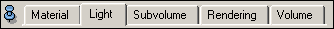

The QTabBar class provides a bar consisting of a list of labeled, selectable tab elements, e.g., for use in tabbed dialogs. Only one tab can be switched at a time. Thus the port facilitates a one-of-many choice. This port has all methods of a PortRadioBox with the additional ability to assign a list of port objects to every single tab element. If a tab element is chosen, all ports included in the tabs port list and which are also marked as visible, are scheduled for drawing. If a tab gets deselected, the ports included in its port list become hidden. It's possible to add the same port to multiple tab elements and even to multiple QTabBar objects but it gets only visible if all its parent tab elements are selected, which is never the case for two tabs at the same QTabBar.

Modules using this port are for example Volren.
Inherits all commands of PortRadioBox.
Adds the given port <object><port> to the tab objects <index> port list.
Removes the given port <object><port> from the tab objects <index> port list.